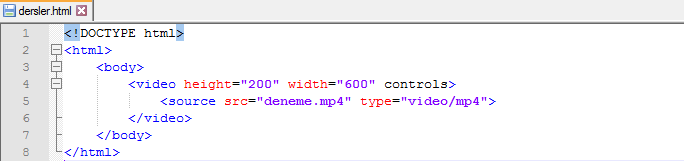
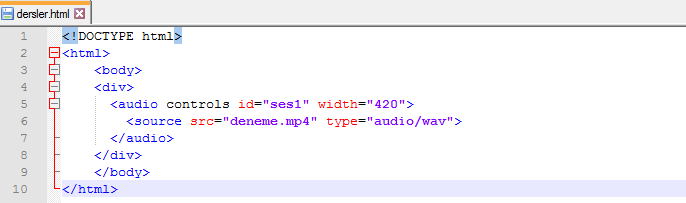

HTML 5 Çokulu Ortam Elemanları
HTML5'te çokluortam (multimedia) dosyalarını, Silverlight ya da Flash gibi eklentilere ihtiyaç duymadan web sayfanıza gömebilirsiniz.
<audio> etiketi
<audio> etiketi ses içeriği tanımlamak için kullanılır.
<video> etiketi
<video> video ya da filmleri web sayfasına eklemek için kullanılır.
<source> etiketi
<source> çoklu ortam kaynaklarını tanımlamak için kullanılır.
<embed> etiketi
<embed> bir dış uygulama ya da etkileşimli bir içerik (eklenti) taşıyıcıyı tanımlamak amacıyla kullanılır.
Bir videonun web sayfasına gömülmesi(embeding)
Bir videoyu web sayfanıza gömmek için <video> etiketini kullanabilirsiniz. Bu etikete aşağıdaki özellikleri (attribute) atamanız yararlı olur.
- src: Medya kaynağını (source) belirtmek için kullanılır.
- controls: Kullanıcı bunun sayesinde yüklediği çokluortam dosyasını harekete geçirir ya da durdurur.
- width ve height: Videonun genişlik ve yüksekliğidir. Yükleme sırasında çerçevenin değişmemesi için genişlik ve yükseklik özelliklerini önceden atayın.
HTML5 şu anda MP4, WebM ve OGG video dosya biçimlerini destekliyor.
Aşağıda web sayfasına video gömmenin bir örneğini bulabilirsiniz:
Aşağıdaki tabloda hangi tarayıcıların hangi video formatlarını desteklediğini görebilirsiniz:
| TARAYICI | MP4 | WEBM | OGG |
|---|---|---|---|
| Internet Explorer 10+ | EVET | ELLE KURULUM | ELLE KURULUM |
| Chrome 46.0+ | EVET | EVET | EVET |
| Firefox 40.0+ | EVET | EVET | EVET |
| Safari 9+ | EVET | ELLE KURULUM | ELLE KURULUM |
| Opera 10.6+ | EVET | EVET | EVET |
Bir ses dosyasının web sitesine gömülmesi
Videoya benzer şekilde, <audio> etiketiyle de ses ve şarkılar web sayfasına gömülebilir. Desteklenen dosya biçimleri MP3, WAV ve OGG'dur.
Aşağıdaki tabloda hangi tarayıcıların hangi ses dosya biçimlerini desteklediğini görebilirsiniz:
| TARAYICI | MP4 | WEBM | OGG |
|---|---|---|---|
| Internet Explorer 10+ | EVET | ELLE KURULUM | ELLE KURULUM |
| Chrome 46.0+ | EVET | EVET | EVET |
| Firefox 40.0+ | EVET | EVET | EVET |
| Safari 9+ | EVET | ELLE KURULUM | ELLE KURULUM |
| Opera 10.6+ | EVET | EVET | EVET |
@2016 Contact abdullahcelik6@gmail.com